Norbert Reich | Principal Investigator |
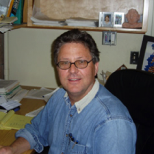
Dr. Reich received his Ph.D. from the University of California, San Francisco in 1984. After an NIH post-doctoral fellowship at UCSF, he joined the faculty at UCSB in 1987. His awards include: a Regent's Junior Faculty Fellowship (1987); an American Cancer Society Faculty Research Award (1991); the UC President's Award for Excellence in Undergraduate Research (1994); and elected to the AAAS (2011).
|
|
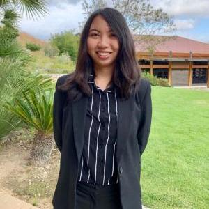
College of Letters & Science
B.S. Biochemistry & Molecular Biology 2020 |
Gerryl Naranjo* | PresidentGerryl is a 4th year from Thousand Oaks, CA. As co-president for ASBMB UCSB, I enjoy planning many of our events with my board members and helped develop ASBMB’s science outreach high school module with SciTrek. I am also a pre-medical student and enjoy learning about research in biochemistry and also about biochemical applications in medicine. |
Kelsey Chen* | Social Media & Fundraising CommitteeKelsey Chen is a second-year who works on the ASBMB fundraising and Instagram team. Once you get to know her, she is said to have more energy than the phosphate bonds in ATP. In her spare time, she enjoys playing the ukulele, making mini clay figurines, and roller skating. She hopes to go into health or research in the future. |
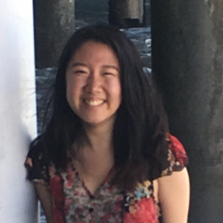
College of Letters & Science
B.S. Chemistry 2022 |
|
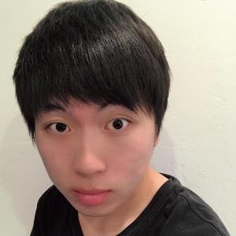
College of Letters & Science
B.S. Biochemistry & Cell Biology 2020 |
Tyler Lee | VP, Director of MarketingTyler is currently doing research at the Morse Lab investigating the tunable aggregation of Reflectin protein and its use as a payload for enzymes to efficiently perform its biological tasks. |
Heather MacGregor | Social Media Committee, Web DevelopmentHeather is be pursuing a Ph.D. and conducting research in computational applications to drug design she graduates this Spring. She is currently working with Dr. Kalju Kahn to benchmark density functional theory methods for the quantum mechanical prediction of vibrational circular dichroism spectra and has been independently developing a web-based app that will allow for public access to geophysical and environmental data collected by remote sensors for the Cheadle Center of Biodiversity and Ecological Restoration. Heather spent Summer 2019 in the Rios Lab at Tufts University investigating the feeding state dependency of inhibitory synaptic dynamics in the ventromedial hypothalamus. When not in the lab, Heather can be found mentoring first- and second-year students at UCSB, helping to further develop high school modules for SciTrek, and watching for dogs on the Chem lawn. |
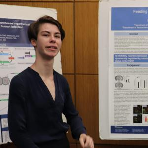
College of Creative Studies
B.S. Chemistry and Biochemistry 2020 |
|
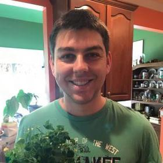
College of Letters & Science
B.S. Cell & Developmental Biology 2020 |
Jonathon Baginski* | Board Member |
Edwin Liu* | Director of Fundraising CommitteeEdwin Liu is a 2nd year biology major from Los Angeles, California. He is currently involved in the financial side of the organization, watching over fundraisers and coordinating funding. His main area of interest is biomedical research. |
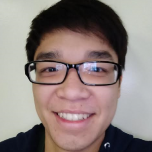
College of Letters & Science
B.S. Biology 2022 |
|
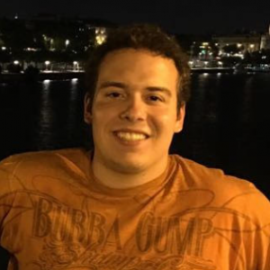
Patrick McAlpine is a fourth year Biology, B.S. student at the University of California, Santa Barbara. He has a certificate in technology management and has interned in the functional genomics lab Dr. Aza-Blanc at the Sanford Burnham Prebys Medical Discovery Institute. He currently works in the cell biology lab of Dr. Dzokai Ma here at UCSB. |
Patrick McAlpine* | Fundraising Committee |
Ben Lewis* | Fundraising Committee |
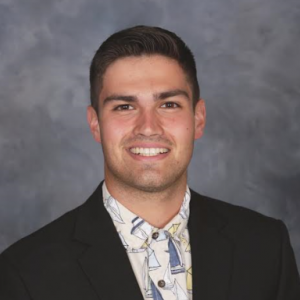
Ben Lewis is a third-year Chemistry/Biochemistry major from San Jose in the College of Creative Studies. Not currently in a research group, he is interested in drug design and metabolism, and hopes to one day change the world through a groundbreaking discovery. In his free time, Ben enjoys playing, discussing, and watching sports as well as studying philosophy. |
|
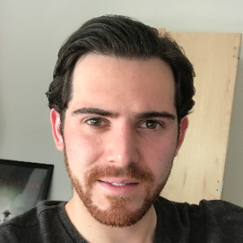
Kord Boniadi is a California native raised in Laguna Niguel. He is an undergraduate at UCSB majoring in Biochemistry. He currently holds certification as an EMR and is pursuing his EMTs. He’s worked as a dental assistant in a private practice and spends most of his summers protecting the beaches as an OC lifeguard. His future goal is to the pursue a career in medicine. On his free time he enjoys playing the piano and violin; and, when the swell is good, surf with friends. |
Kord Boniadi |
Loc Ngo* |
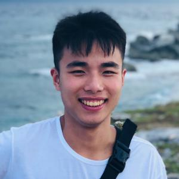
Loc is an international student from Vietnam. He is pursuing a career path in the field of chemistry. Loc is an undergraduate lab assistant for Jacob, a graduate student in Professor Ford's research group. Loc really misses Vietnamese food because there is not one single decent Vietnamese restaurant in Isla Vista, where he currently lives. |
|
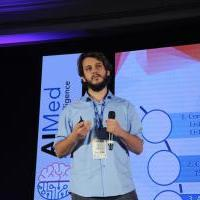
Eden Lukach Romm is a Senior Undergraduate Chemistry B.S. student at the University of California, Santa Barbara. He used to live in San Diego, California before moving to Santa Barbara in pursuit of his education. Eden is involved in off-campus research using artificial intelligence techniques to illuminate possible treatments for diseases like Alzheimer’s and various cancers. His favorite extracurricular activities include playing basketball, video games, and trying new foods. |
Eden Lukach Romm*Former President |